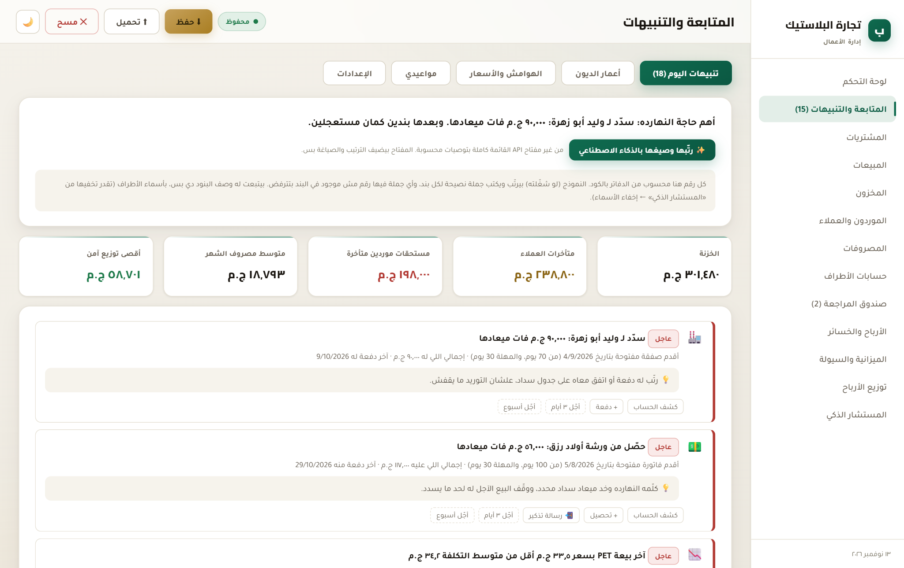
كل الأسماء والأرقام في الصور دي متألفة (دفاتر تجريبية)، مالهاش علاقة بأي حد حقيقي.
حسن ومعاه شريكين، كريم ومجدي، شغالين في تجارة خامات البلاستيك: بيشتروا HDPE وLDPE وPP وPET من موردين في العاشر وبنها وإسكندرية، ويخزّنوا في مخزنين، ويبيعوا لمصانع عبوات ومواسير وأكياس. الشغل كله تقريباً آجل: المورد يستنى فلوسه شوية، والمصنع ياخد البضاعة ويدفع على دفعات.
المشكلة عمرها ما كانت في البيع والشراء نفسه. المشكلة كانت في الأسئلة اللي ملهاش إجابة سريعة: الخزنة فيها كام بجد؟ مين عليه فلوس من زمان؟ لو وزعنا أرباح دلوقتي هنلاقي نسدد للموردين؟ سعر الـ PP بقى كام علينا؟ والدفتر والإكسل كانوا بيقولوا نص الحكاية.
البرنامج ده اتعمل علشان يجاوب الأسئلة دي. ملف واحد اسمه plastic_manager.html بيتفتح في المتصفح، من غير إنترنت ومن غير سيرفر. وجنبه خدمة صغيرة اختيارية للناس اللي في الشارع (عز وأحمد) يسجلوا بصوتهم من الموبايل ويسألوا عن الحسابات.
تعالى نمشي مع حسن يوم كامل، من أول ما يفتح البرنامج الصبح لحد ما يقفل الحسابات بالليل.
plastic_manager.html وهيفتح في Chrome أو Edge.python -m http.server 8791 وافتح http://localhost:8791/plastic_manager.html.plastic_data_….json لما تدوس «⬇ حفظ». ده النسخة الأساسية اللي تاخدها معاك. في Chrome الملف بيترَبط، والحفظ الجاي بيكتب عليه نفسه من غير ما يسألك..gitignore).أول ما حسن يفتح البرنامج بيلاقي لوحة التحكم: إجمالي المشتريات والمبيعات والمصروفات وصافي الربح، وتحتهم آخر ٣ مشتريات وآخر ٣ مبيعات. والجديد إن فوقهم كارت «🔔 متابعة اليوم» جديد فيه أهم ٣ حاجات محتاجة تتعمل النهارده، وزرار «عرض الكل» بيوديه لشاشة المتابعة.
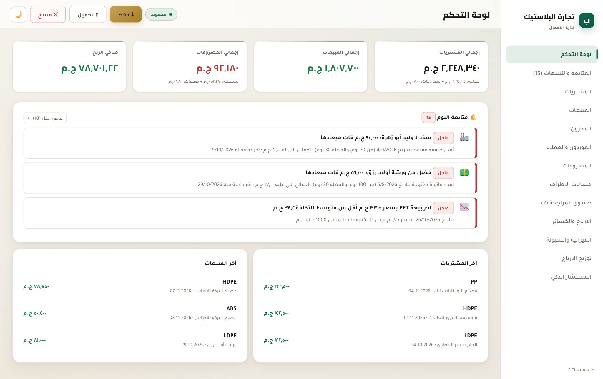
الرقم اللي جنب «المتابعة والتنبيهات» في القايمة هو عدد البنود العاجلة والمهمة. البنود اللي «للعلم» بس مش بتتعد في الرقم ده، فممكن تلاقي القايمة جوه أطول من الرقم.
دي الشاشة اللي حسن بقى يبدأ بيها يومه. البرنامج بيقرا الدفاتر كلها ويطلع قايمة «تعمل إيه النهارده»، وكل بند فيه تلات حاجات:
| البند | إمتى يظهر |
|---|---|
| 💵 تحصيل من عميل | لما جزء من رصيده يعدّي مهلة السداد (الافتراضي ٣٠ يوم). عاجل لو أقدم فاتورة عدّت ٩٠ يوم. |
| 🚧 حد الائتمان جديد ٢ | عميل حطّيت له حد ائتمان ورصيده عدّاه. دايماً «عاجل»، وفيه الرصيد والحد والزيادة. |
| 🏭 سداد لمورد | لما اللي علينا له يعدّي مهلته، و🗓 لو في مبلغ هيستحق خلال أسبوع. |
| 🏦 السيولة | الخزنة بالسالب، أو أقل من مستحقات الموردين المتأخرة، أو أقل من مصروف شهر. |
| 💰 التوزيع | لما في ربح متاح للتوزيع: بيقولك أقصى مبلغ آمن ينفع يطلع من الخزنة. |
| 📉 بيع تحت التكلفة | آخر بيعة لخامة بسعر أقل من متوسط تكلفتها. |
| 📈 / 📉 سعر الشراء اتغير | آخر صفقة شراء أغلى أو أرخص بـ ٥٪ أو أكتر من متوسط اللي قبلها، والخامة لسه في المخزن. |
| 🧊 مخزون راكد | خامة في المخزن ما اتباعش منها حاجة من ٤٥ يوم (أو من آخر شراء لو عمرها ما اتباعت). |
| 📦 عجز مخزون | المباع المسجّل أكتر من المشترى. |
| 📥 مسودات | مسودات من الميدان مستنية مراجعة. |
| 🤝 🧾 🔁 | فلوس مع تاجر أو عهدة مع عامل عدّت ٣٠ يوم، وتمويل شريك لسه ما اتردّش. |
| ⏰ مواعيدك | أي ميعاد كتبته بنفسك، من قبلها بـ ٣ أيام لحد ما تعلّم عليه «تم». |
لو حسن حاطط مفتاح Gemini أو Grok في «المستشار الذكي»، بيقدر يدوس الزرار ده. النموذج بياخد وصف البنود دي بس (مش الدفاتر)، ويرجّع حاجتين: ترتيب للتنفيذ النهارده، وجملة نصيحة واحدة لكل بند بالعامية. الجمل دي بتظهر بعلامة ✨ مكان 💡.
وفي حارس على الأرقام: أي جملة من النموذج فيها رقم مش موجود في البند نفسه بتترفض، والتوصية المحسوبة بتفضل مكانها. ولو حسن مفعّل «إخفاء أسماء الأطراف» في المستشار، الأسماء بتروح للنموذج «طرف-١، طرف-٢» وبترجع بأسمائها على الشاشة. زرار «↺ الترتيب المحسوب» بيلغي الصياغة ويرجّع كل حاجة زي ما الكود حسبها.
جديد ٢ الصياغة بتفضل محفوظة طول اليوم، بس لو الدفاتر اتغيرت بعدها (عميل دفع، صفقة اتعدلت) أي جملة فيها رقم مبقاش في البند بتختفي لوحدها والتوصية المحسوبة ترجع مكانها. يعني عمرك ما هتشوف «حصّل ٥٦ ألف» بعد ما العميل دفع جزء. وكمان اتصلح باج: لما يبقى في ١٠ أطراف أو أكتر مخفيين، «طرف-١٢» كان بيرجع باسم «طرف-١» وجنبه رقم ٢.
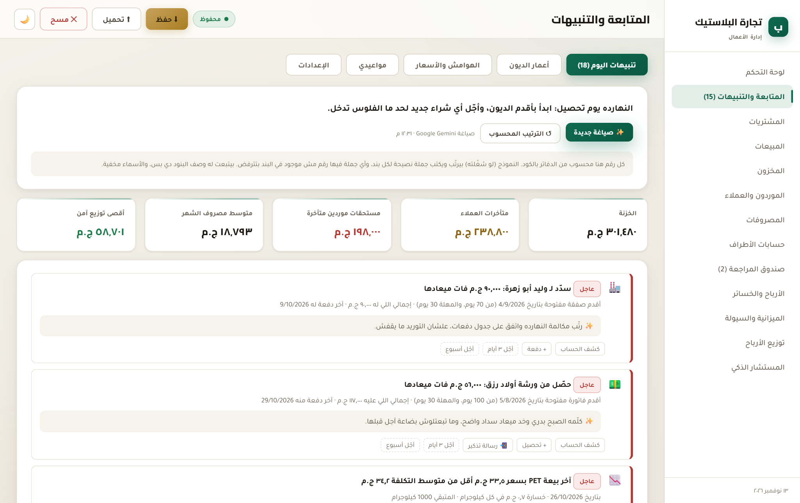
جدولين: العملاء (اللي لينا) والموردين (اللي علينا). كل طرف: الرصيد مقسوم على لحد ٣٠ يوم، ٣١ لـ ٦٠، ٦١ لـ ٩٠، وأكتر من ٩٠، والمتأخر منه، وأقدم فاتورة مفتوحة، والمهلة، وآخر دفعة. القاعدة: الكاش المدفوع جوه الصفقة بيسدد الصفقة نفسها، والتحصيلات على الحساب بتسدد أقدم فاتورة الأول. إجمالي الجدول بيساوي الذمم المدينة في الميزانية بالظبط.
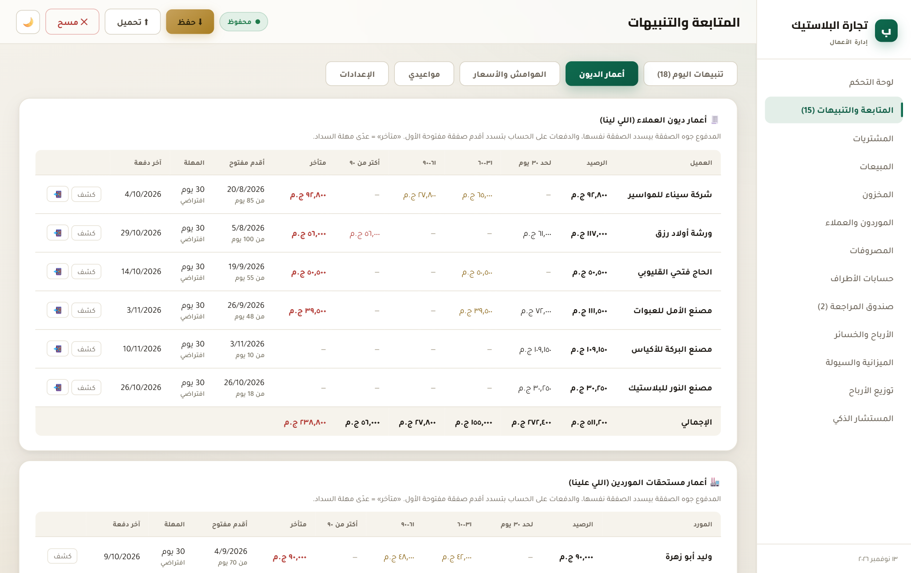
لكل خامة: المتبقي وقيمته، متوسط التكلفة، آخر سعر شراء وتغيّره عن المتوسط اللي قبله، آخر سعر بيع، والهامش بتلات طرق: على كل الفترة، على آخر ٣٠ يوم، وعلى آخر تكلفة (يعني لو بعت النهارده بنفس آخر سعر وأنا شاري بآخر سعر، هكسب كام في المية). ده بالظبط اللي محتاجه في سوق أسعاره بتتحرك مع البترول والدولار.
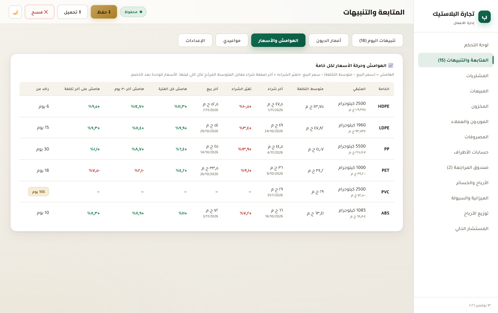
من بند التحصيل أو من جدول الأعمار، زرار «📲» بيكتب رسالة مؤدبة فيها الرصيد والجزء المتأخر وتاريخ أقدم فاتورة، من كشف الحساب نفسه. حسن بيعدّل فيها براحته، وبعدين «نسخ الرسالة» أو «فتح في واتساب» (لو العميل له رقم موبايل مصري متسجل). البرنامج نفسه ما بيبعتش أي حاجة، حسن هو اللي بيدوس إرسال في واتساب. وفي زرار «سجّل ميعاد متابعة» بيحجز ميعاد بعد ٣ أيام.
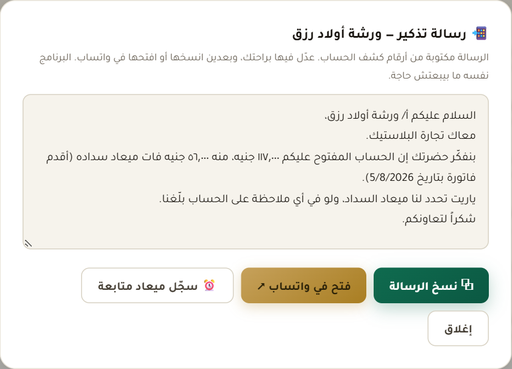
العميل قال «هدفع الخميس»؟ في شيك ميعاده يوم ١٥؟ حسن بيكتبه هنا بتاريخه ويربطه بعميل أو مورد لو حب. الميعاد بيظهر في تنبيهات اليوم قبلها بـ ٣ أيام، وبيبقى «عاجل» يوم الميعاد ولو فات، لحد ما يعلّم عليه «✓ تم». المواعيد دي بتتحفظ جوه ملف البيانات، والملفات القديمة اللي من غيرها بتفتح عادي.
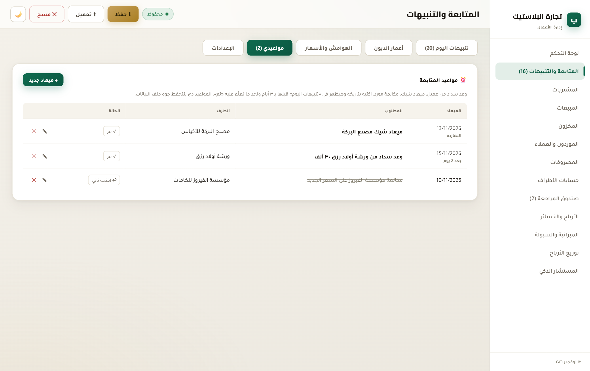
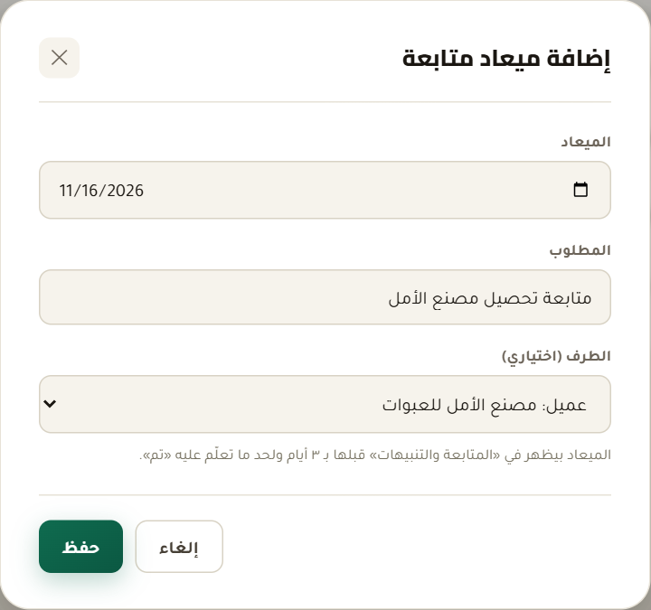
مهلة سداد العملاء، مهلة الموردين، المخزون يبقى راكد بعد كام يوم، متابعة العهد بعد كام يوم، احتياطي المصروفات قبل التوزيع (بالشهور)، واسم النشاط اللي بيتكتب في رسائل التذكير. دي بتتحفظ على الجهاز بس. ولو عميل معيّن متفق معاه على مهلة غير الافتراضي، اكتبها في بياناته (تحت في «الموردون والعملاء»).
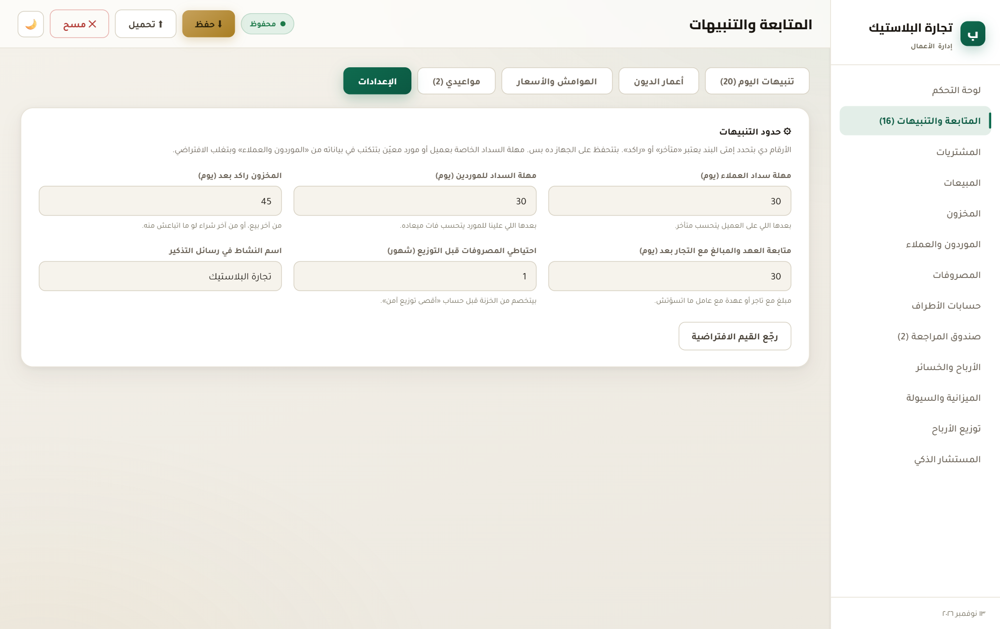
شاشة المشتريات فيها كل صفقة برقمها (#001، #002 ...): التاريخ، المورد، الخامة، اللون، الوزن المتعاقد عليه ووزن الميزان، الزيادة أو الفاقد، الخصم، المدفوع، والمكان في المخزن. فيها بحث، وترتيب بالضغط على العنوان، وفلتر فترة (آخر أسبوعين، آخر شهر، آخر ٣ شهور، الشهر الحالي، فترة مخصصة)، وعدد الصفوف في الصفحة.
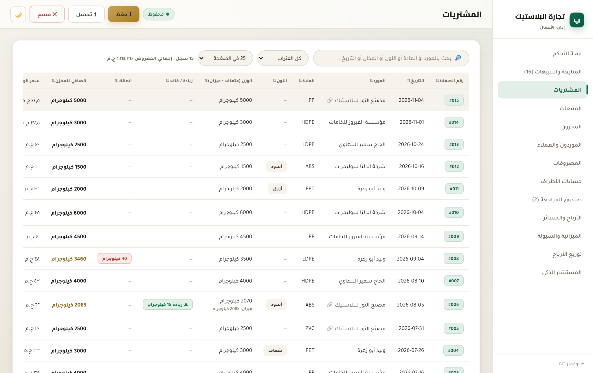
«+ إضافة مشتريات» بيفتح فورم الصفقة. الحاجات المهمة فيه:
وعلى الشمال لوحة التأثير: قبل ما تحفظ بتشوف الخزنة والمخزون وحساب المورد هيبقوا كام بعد الحفظ، والقيد المحاسبي. ولو الخزنة هتبقى بالسالب أو المخزون هيبقى بالسالب، اللوحة بتحذّرك.
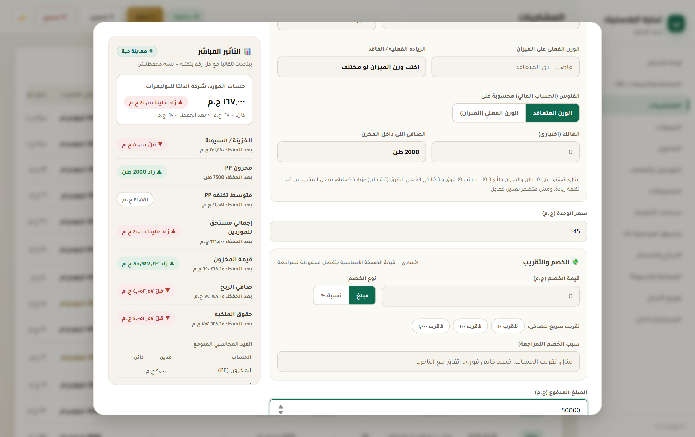
نفس شكل المشتريات. البيعة ممكن تتربط بصفقة الشراء اللي البضاعة خرجت منها (والبرنامج يمنعك تبيع منها أكتر من المتبقي)، وتختار سحبت من أنهي مكان في المخزن.
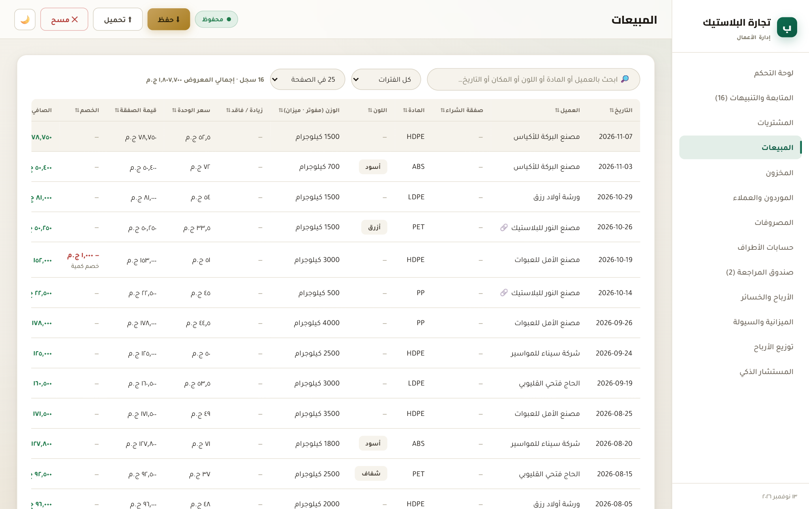
حسن فاتح فورم بيع لمصنع البركة، ألف كيلو HDPE بـ ٥٢ وآجل. قبل ما يحفظ، لوحة التأثير على الشمال بتقوله بالأرقام: حساب العميل كان كام وهيبقى كام. ولو للعميل ده حد ائتمان والبيعة دي هتعدّيه، بيظهر تحذير أصفر فيه الرصيد الجديد والحد والزيادة. ولو العميل عليه فلوس فات ميعادها، تحذير تاني بالمتأخر وعمر أقدم فاتورة. ده تحذير مش منع: القرار لحسن.
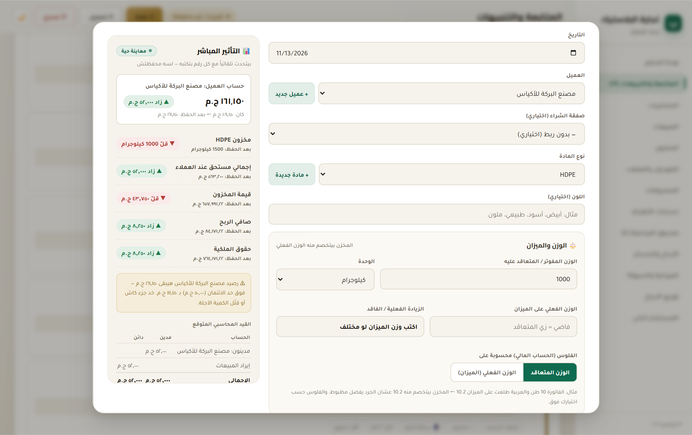
تبويبين: حسب الخامة (اللي اشتريناه، الهالك، المباع، المتبقي، متوسط التكلفة، والقيمة) وحسب المكان (كل مخزن ومكان فرعي فيه إيه، وكام لسه ما اتوزعش على مكان). منها كمان بتطبع ورقة جرد للمخزن، وبتوزّع صفقة قديمة على أماكن. التكلفة بالمتوسط المرجّح (AVCO): كل كيلو في المخزن متقيّم بمتوسط تكلفة الخامة.
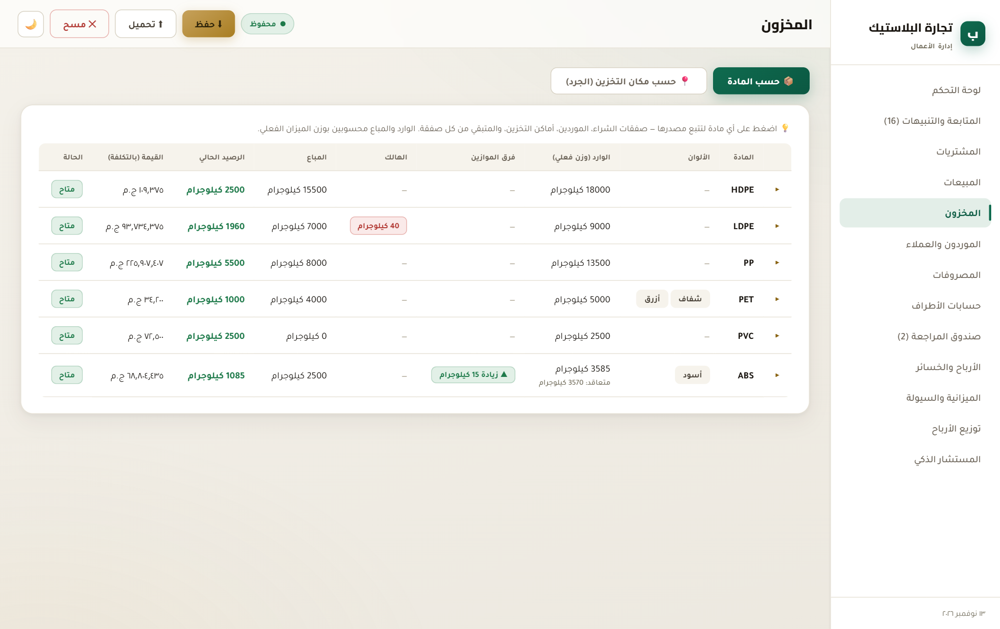
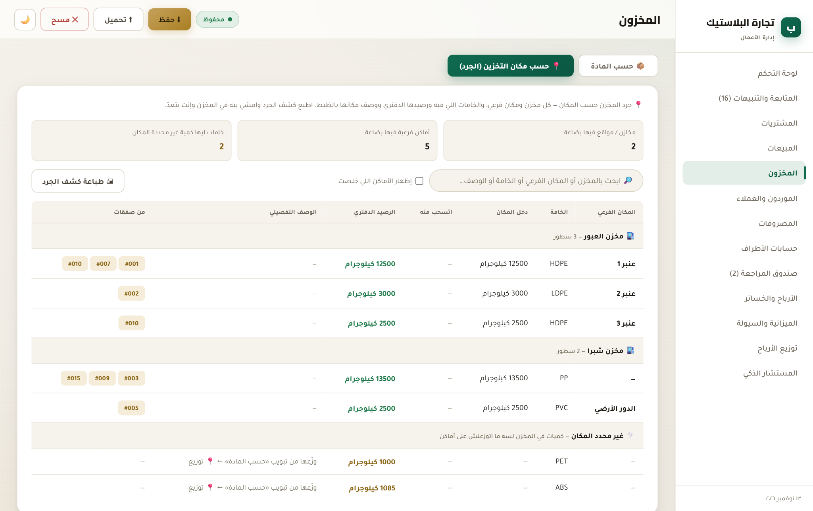
قايمة الموردين والعملاء بالكود (م-١٠١، ع-١٠٧)، والتليفون والمدينة. لو نفس الشخص بيبيعلنا وبيشتري مننا، اربطه كـ«حساب موحد» من زرار ✎. والبرنامج نفسه بيقترح الربط لو لقى نفس الاسم في الناحيتين. كمان من هنا بتضيف خامات جديدة.
الجديد: مهلة السداد بالأيام جديد في فورم العميل والمورد. سيبها فاضية علشان الافتراضي، أو اكتب مثلاً ٥ لعميل متفق معاه على أسبوع.
والجديد كمان جديد: البرنامج مش هيحذف مورد أو عميل أو شريك عليه حركات. قبل كده الحذف كان بيسيب صفقاته في الدفاتر باسم «-»، ورصيده يختفي من جدول الحسابات وهو لسه محسوب في الميزانية.
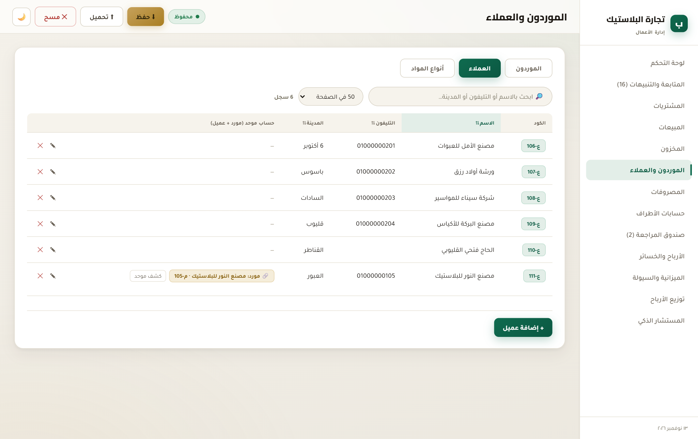
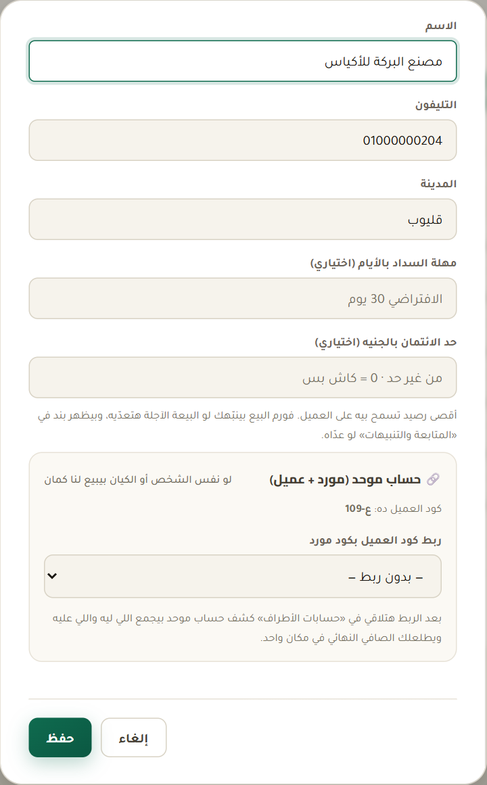
حد الائتمان جديد ٢: في فورم العميل بس. اكتب أقصى رصيد تسمح بيه عليه بالجنيه، أو 0 لو العميل ده كاش بس، أو سيبه فاضي من غير حد. الحد بيتحفظ في ملف البيانات (حقل اختياري، والملفات القديمة بتفتح عادي). وبيشتغل في مكانين: تحذير في فورم البيع قبل الحفظ، وبند «🚧» عاجل في المتابعة لو الرصيد عدّاه. ومهلة السداد بقت لازم من ١ لـ ٣٦٥ يوم: قبل كده لو كتبت 0 كانت بتتحفظ «فاضي» من غير ما تقولك، والعميل ياخد الـ ٣٠ يوم الافتراضي.
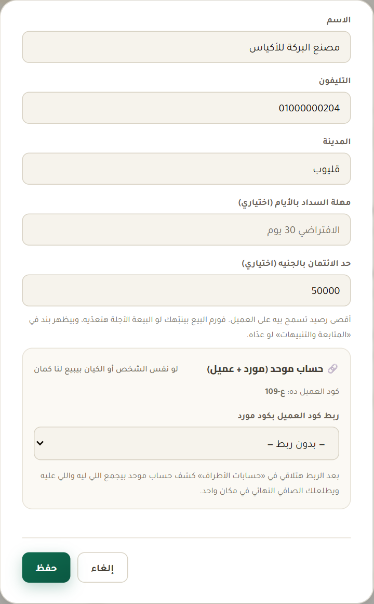
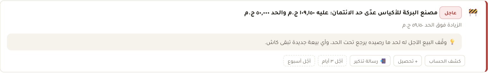
إيجار، نقل، عمالة، كهرباء ومياه، صيانة، متفرقات. كل مصروف بتاريخه وبيانه ومبلغه، بنفس أدوات الجدول (بحث، فترة، إجمالي المعروض).
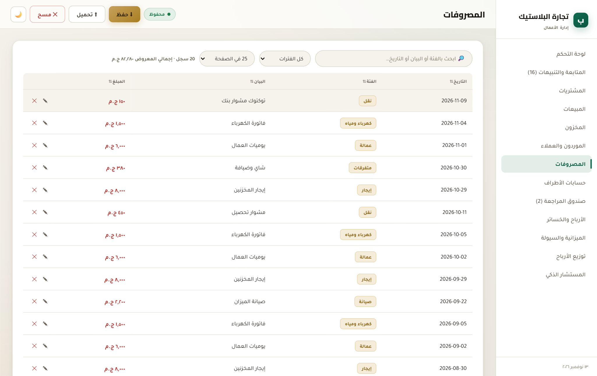
فوق: الحسابات الموحدة (عليه كعميل، ليه كمورد، والصافي) وزرار «⚖ مقاصة» اللي بيخصم ده من ده من غير ما فلوس تتحرك. وتحت جدول العملاء وجدول الموردين، وسجل التحصيلات وسجل الدفعات. «كشف» بيفتح كشف حساب بالرصيد الجاري، و«🖨» بيطبعه.
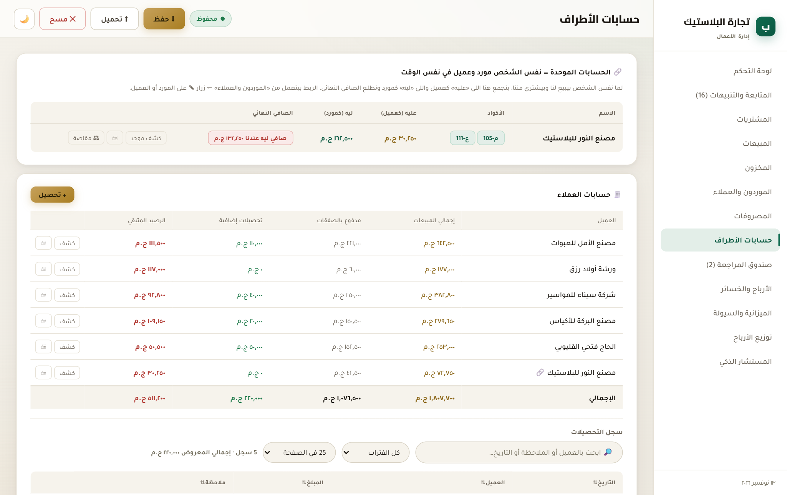
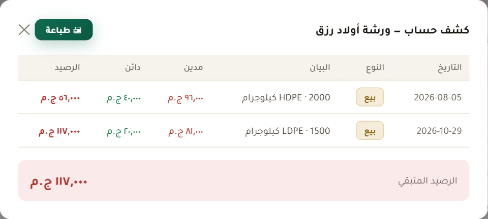
عز بيلف على الموردين. فاتح صفحة «مساعد المكتب» على موبايله، كتب الكود بتاعه، وبيتكلم عادي: «اشتريت من الحاج سمير ألفين كيلو LDPE بخمسين ودفعت عشرين ألف». الصفحة بتفهم وتطلع مسودة، يراجعها ويدوس «ابعت». ولو سأل «حساب فلان كام؟» أو «مين متأخر في السداد؟» جديد بتجاوبه من آخر لقطة رفعها المكتب.
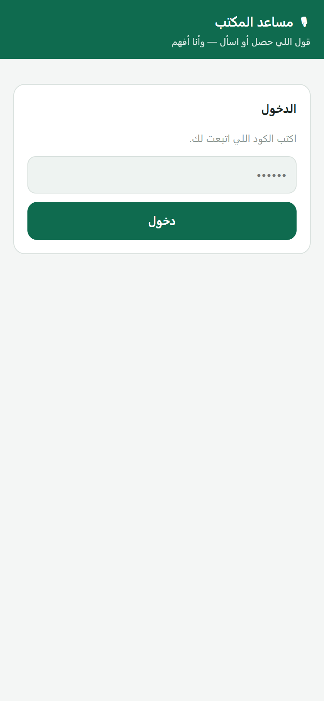
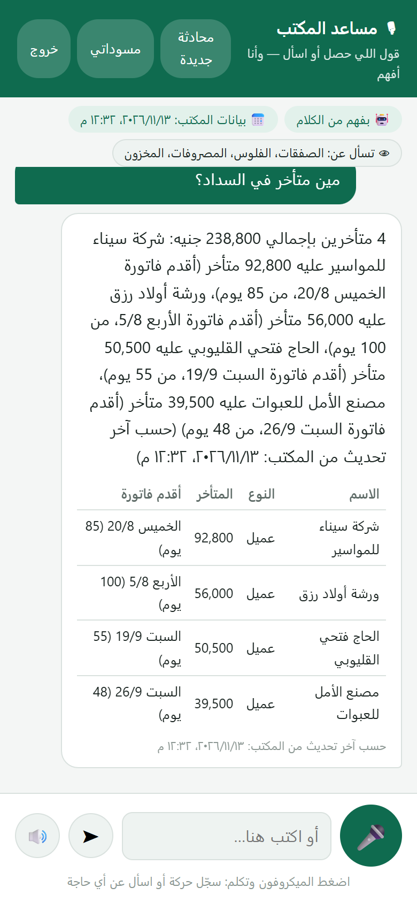
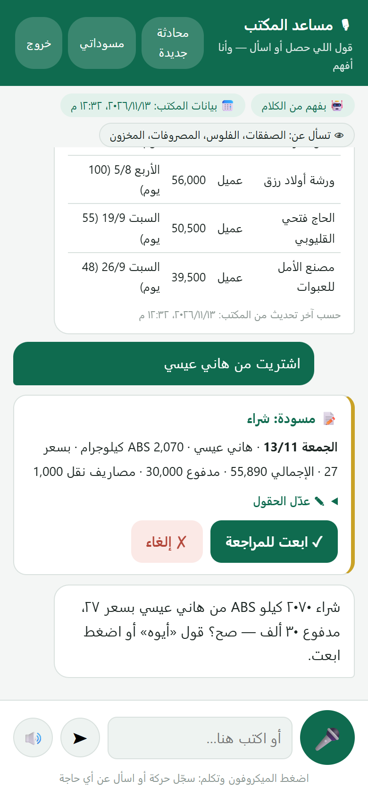
الجديد في «مين متأخر؟»: البرنامج بقى يبعت مع اللقطة عمر أقدم فاتورة مفتوحة لكل طرف والجزء المتأخر، والخدمة بتحسب العدد والإجمالي وبتقرا الرد زي ما هو من غير ما النموذج يعيد صياغته. والسؤال ده محتاج صلاحية «الفلوس» زي سؤال الحساب بالظبط.
جديد ٢ الجدول اللي تحت الرد في الصفحة الكلاسيك بقى يعرض المتأخر وأقدم فاتورة وعمرها بدل الرصيد كله (قبل كده الرد كان صح والجدول بيعرض حاجة تانية). والمورد اللي دفعناله زيادة بقى مكتوب «لينا عنده» بدل «مقدم».
المسودات بتوصل هنا (البرنامج بيسحبها كل دقيقة لو مفتوح، أو بزرار «جلب المسودات الجديدة»). حسن بيفتح المسودة فتفتح في فورم الشراء العادي متعبّي، وفوقه كلام عز الأصلي وأي اسم البرنامج ما عرفش يطابقه. الحفظ هو الاعتماد. والرفض لازم له سبب، والمسودة المرفوضة بتفضل موجودة بسببها، مفيش حذف. ولو الخدمة مش متاحة، في «📥 لصق مسودة» بصيغة JSON.
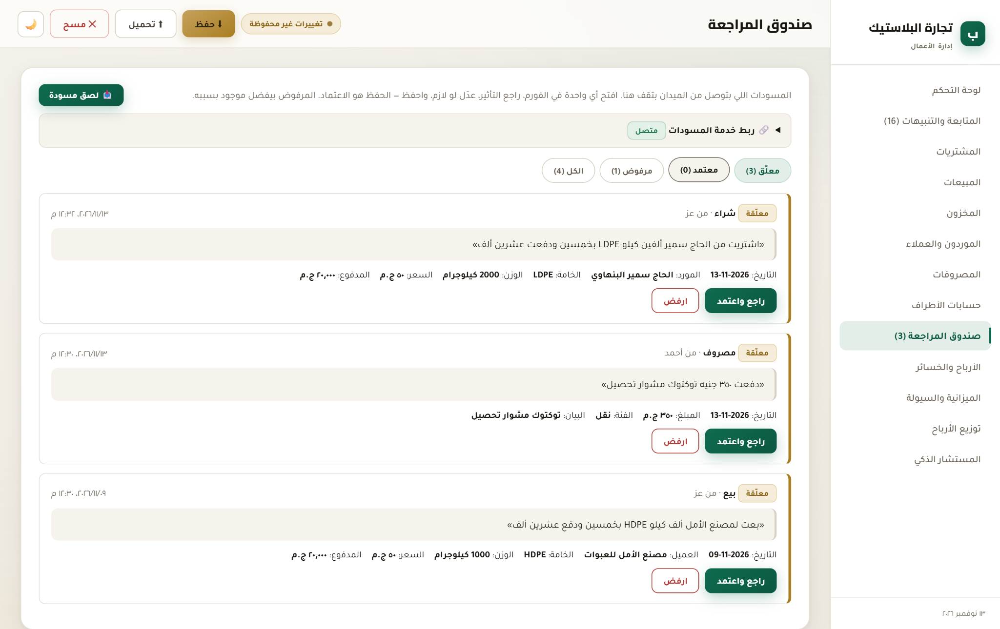
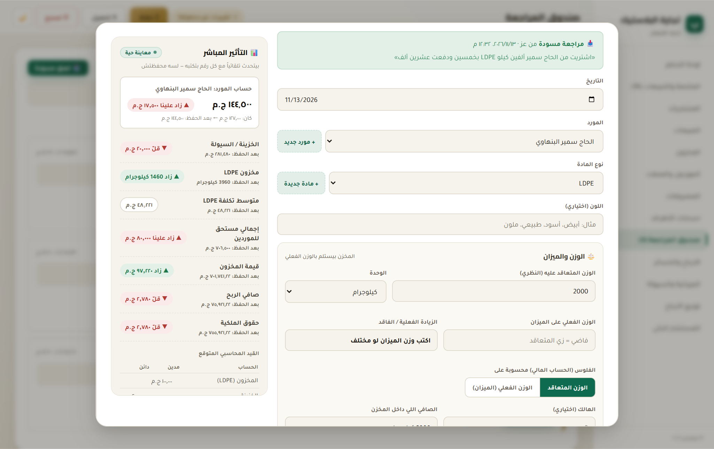
من نفس الشاشة، جزء «ربط الخدمة» فيه: رابط الخدمة ورمز المالك، رفع قايمة الأسماء، رفع لقطة الميدان (وبتترفع لوحدها مع كل حفظ لو الاختيار متعلّم)، «ضيف الماليات للقطة» (الخزنة والأرباح والشركاء، مقفولة افتراضياً)، 🔑 صلاحيات ناس الميدان (مين يسأل عن إيه)، 🧠 نموذج الذكاء الاصطناعي للخدمة (Gemini أو Grok أو Claude، والمفتاح بيتحفظ مشفّر على الخدمة)، وسجل الأسئلة اللي اتسألت.
المبيعات ناقص تكلفة البضاعة المباعة (بالمتوسط المرجّح) يبقى مجمل الربح، وبعدين المصروفات ومصاريف الصفقات يطلع صافي الربح. فيه فلتر فترة (الشهر ده، اللي فات، السنة) وتقسيم بالشهور. والتكلفة في أي فترة محسوبة على المشتريات لحد آخر الفترة بس، علشان صفقة شراء جديدة ما تغيّرش ربح شهر فات.
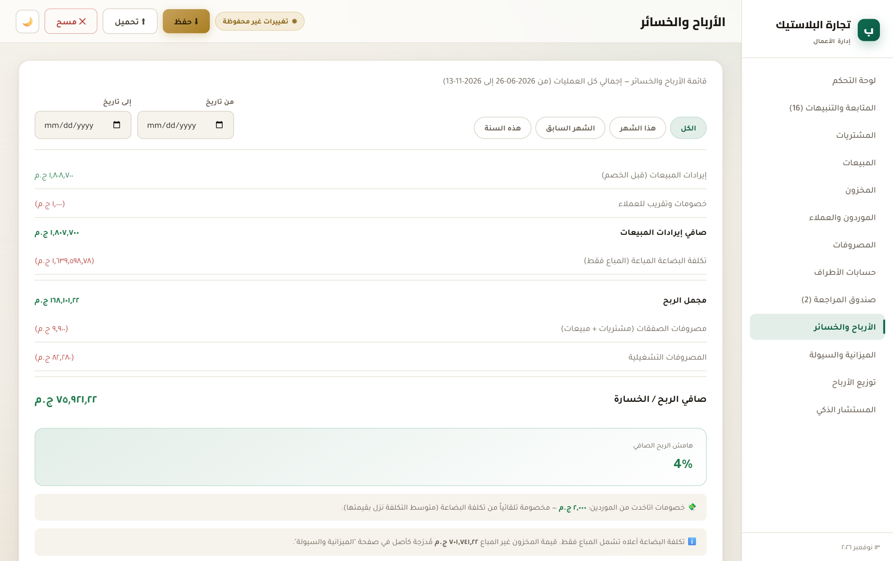
الأصول (الخزنة، اللي عند العملاء، المخزون، الفلوس مع التجار والعمال، سحوبات الشركاء) قصاد الالتزامات (الموردين، تمويل الشركاء) وحقوق الملكية. ومنها: رأس المال، مبالغ مع التجار، سيولة مع العاملين (أو سحب شريك)، تمويل سيولة من شريك (قرض مؤقت مش زيادة رأس مال، والرد عليه حد أقصى)، والتقفيل اللي بيحفظ لقطة من الأرقام من غير ما يمسح حاجة.
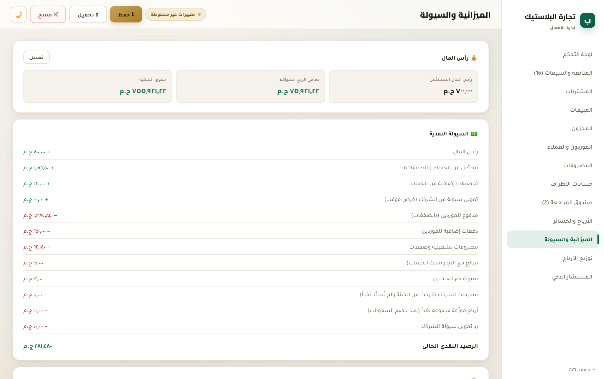
الشركاء بنسبهم، والسحوبات المعلّقة على كل واحد، والتمويل اللي له. «توزيع الآن» بيقسم المبلغ بالنسب، ويخصم سحوبات كل شريك من نصيبه الأول، والخزنة بتنقص باللي اتدفع فعلاً بس. ومش هيسيبك توزع أكتر من الربح المتاح.
الجديد جديد: تحت الربح المتاح سطر «أقصى توزيع آمن على الخزنة دلوقتي» = الخزنة ناقص مستحقات الموردين المتأخرة ناقص احتياطي مصروفات (شهر افتراضياً). علشان الربح ممكن يكون على الورق، لسه عند العملاء أو في المخزن، والخزنة ما تستحملش.
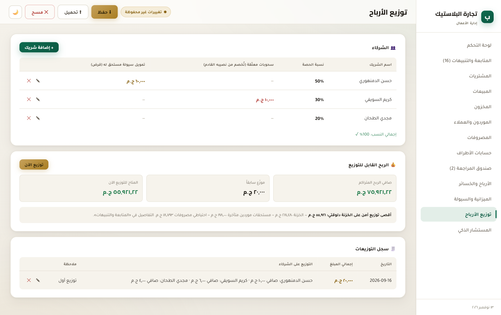
بيبعت ملخص مجمّع (مش السجلات) لـ Gemini أو Grok ويرجع بتقرير: مراجعة شاملة، الربحية والتسعير، المخزون، السيولة والذمم، أو تدقيق. تختار إيه اللي يتبعت، وتقدر تخفي أسماء الأطراف، وتشوف البيانات بالظبط قبل ما تتبعت. المفتاح على الجهاز بس. والفرق بينه وبين شاشة المتابعة: المستشار بيكتب تقرير رأي، والمتابعة قايمة شغل محسوبة.
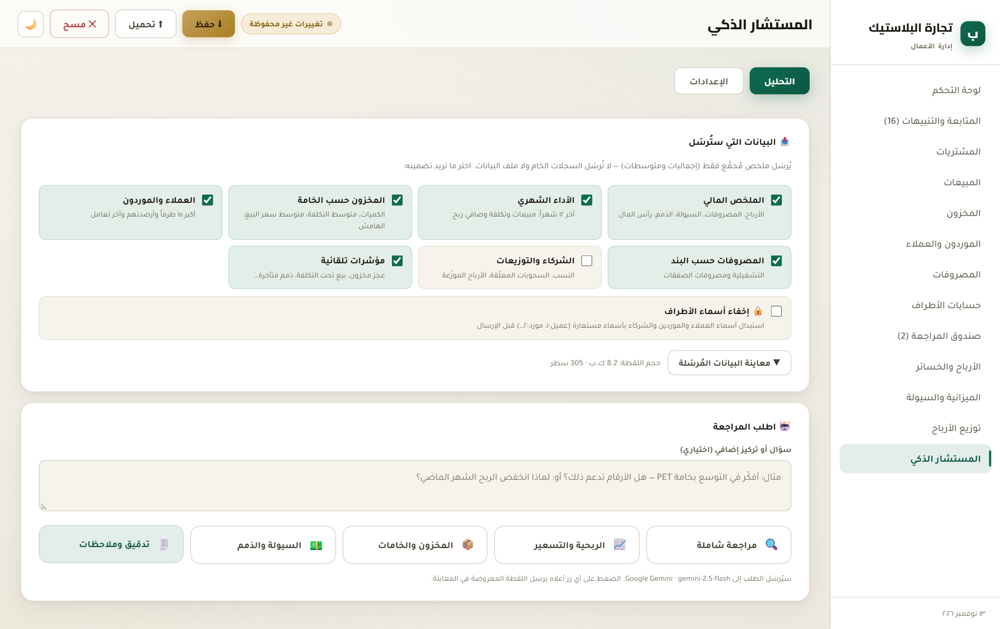
زرار 🌙 فوق بيقلب البرنامج داكن ويفتكر اختيارك. والبرنامج كله بيشتغل على الموبايل: القايمة بتبقى شريط فوق بيتسحب بالعرض.
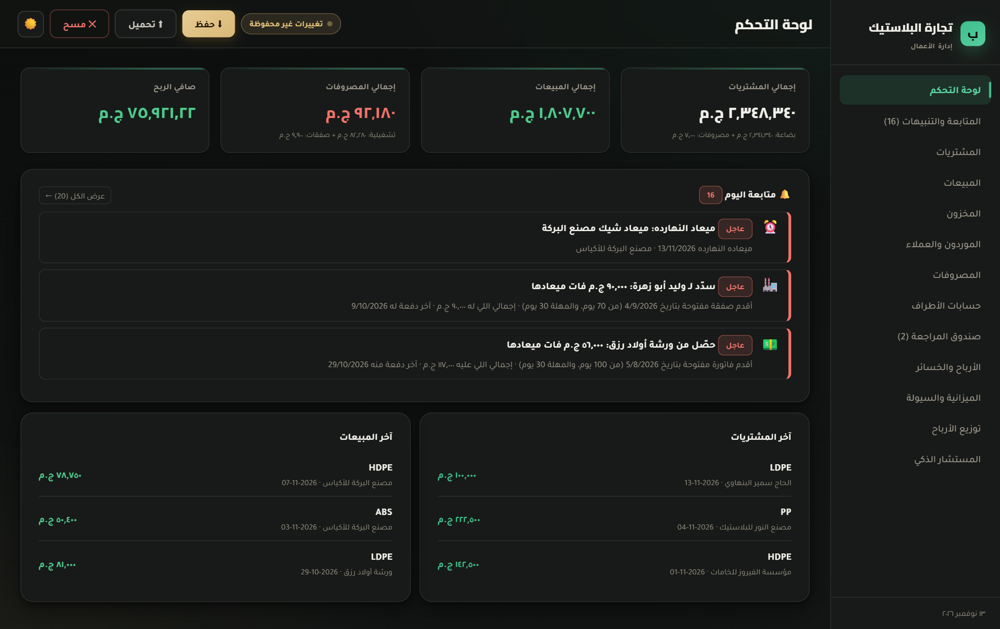
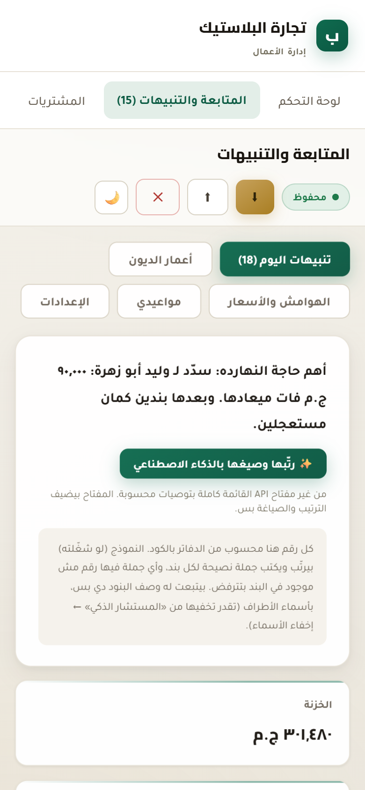
جديد ٢ لو حد بيستخدم قارئ شاشة (NVDA أو TalkBack): كل خانة في كل فورم بقت مربوطة باسمها («الكمية»، «حد الائتمان»…) ورسالة الغلط بتتقري معاها، والتبويبات بتقول أنهي واحد مفتوح.
وآخر حاجة قبل ما حسن يقفل: «⬇ حفظ».
cd drafts-service npm install node dev-start.js --mock # http://127.0.0.1:8790 · الأكواد: عز 1234، أحمد 5678 · رمز المالك dev-owner-token # PORT=8837 MOCK_AI_PORT=8838 node dev-start.js --mock (بورتات تانية) # HOST=0.0.0.0 علشان تجربها من موبايل على نفس الواي فاي
من غير DATABASE_URL الخدمة بتحفظ في ملف data/drafts.json. و--mock بيشغّل نموذج تمثيلي بدل Gemini.
pip install playwright # بيستخدم Chrome المتثبت python tests/e2e_app.py # البرنامج كله على دفاتر تجريبية (74 فحص) python tests/e2e_insights.py # المتابعة والتنبيهات (75 فحص) python tests/e2e_round2.py # باجز المراجعة التانية + حد الائتمان (25 فحص) python tests/walkthrough.py # كل شاشة وتبويب وفورم: ديسكتوب وموبايل وداكن (15 فحص على 123 محطة) python tests/screenshots.py out_dir # صور الدليل + ربط البرنامج بالخدمة فعلياً (10 فحص) cd drafts-service node test/service-check.js # الخدمة: الاستعلامات والحدود والأمان (25 فحص) node test/avatar-smoke.js # الأفاتار (موجود من قبل)
الدفاتر التجريبية في tests/synthetic_ledger.py، وتقدر تطلعها ملف وتفتحه في البرنامج للعرض: python tests/synthetic_ledger.py demo.json.
render.yaml) وقاعدة البيانات على Neon. المتغيرات: DATABASE_URL، OWNER_TOKEN، FIELD_CODES، GEMINI_API_KEY، وTRUST_PROXY=1 (جديد، بيخلّي حد المحاولات الغلط يتحسب لكل موبايل مش للبروكسي). التفاصيل في drafts-service/README.md.| عايز | روح لـ |
|---|---|
| أعرف أعمل إيه النهارده | المتابعة والتنبيهات ← تنبيهات اليوم جديد |
| أعرف مين متأخر ومن إمتى | المتابعة ← أعمار الديون جديد |
| أفكّر عميل بالفلوس | 📲 رسالة تذكير ← نسخ أو واتساب جديد |
| أسجّل وعد سداد أو ميعاد شيك | المتابعة ← مواعيدي ← + ميعاد جديد جديد |
| أشوف هامش كل خامة وحركة السعر | المتابعة ← الهوامش والأسعار جديد |
| أدّي عميل مهلة غير الافتراضي | الموردون والعملاء ← ✎ ← مهلة السداد جديد |
| أحط حد ائتمان لعميل (أو أخليه كاش بس) | الموردون والعملاء ← العملاء ← ✎ ← حد الائتمان جديد ٢ |
| أعرف قبل البيع الآجل لو العميل عدّى حده أو عليه متأخرات | المبيعات ← + إضافة ← لوحة التأثير (التحذير الأصفر) جديد ٢ |
| أعرف أوزع قد إيه من غير ما الخزنة تتزنق | توزيع الأرباح (سطر الحد الآمن) جديد |
| أسجّل شراء / بيع | المشتريات / المبيعات ← + إضافة |
| أسجّل مصروف | المصروفات ← + إضافة |
| أسجّل تحصيل / دفعة لمورد | حسابات الأطراف ← + تحصيل / + دفعة لمورد |
| أقاصّ حساب واحد بيبيع ويشتري | حسابات الأطراف ← الحسابات الموحدة ← ⚖ مقاصة |
| أطبع كشف حساب | حسابات الأطراف ← 🖨 |
| أوزّع صفقة على أماكن / أطبع جرد | المخزون ← حسب المكان |
| أعتمد مسودة من الميدان | صندوق المراجعة ← افتح ← احفظ |
| أدّي حد صلاحية يسأل عن الماليات | صندوق المراجعة ← ربط الخدمة ← 🔑 الصلاحيات |
| أشوف الخزنة والميزانية / أقفّل | الميزانية والسيولة |
| أسجّل قرض سيولة من شريك | الميزانية والسيولة ← تمويل سيولة من شريك |
| أعرف الربح في فترة | الأرباح والخسائر |
| أاخد رأي في الأرقام | المستشار الذكي |
| أحفظ / أفتح ملف | ⬇ حفظ / ⬆ تحميل (فوق) |
| أرجّع حاجة مسحتها | زرار «↩ تراجع» في الرسالة اللي بتظهر تحت (٩ ثواني) |